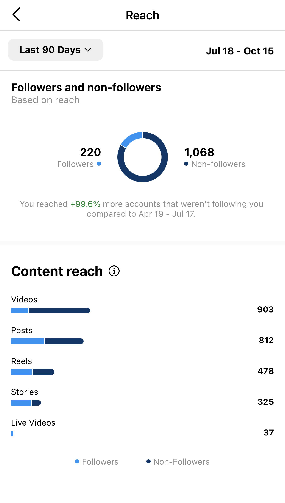

My mission
I aim to perform as a client's Public relations Practioner in Social Media, not merely social media manager. Why?
- I strive to present clients' messages as beneficial as possible both for the client and their audience.
- I am eager to make the audience feel the sincere need to get clients' products rather than manipulatively push the audience to buy something.
- In my social media work, I illuminate clients' strengths and work on improving their weaknesses behind the scenes.
- While collaborating with me, clients receive qualitative social media organization, effective marketing plans, recommendations, and strategies for becoming close with their audience and building honest relations.
Liking such an approach? Let's collaborate.


Clients Analytics
Graphics of the client's Instagram demonstrate the number of reached accounts. In 90 days has come 320 qualitative followers, 73 of which bought the client's product.